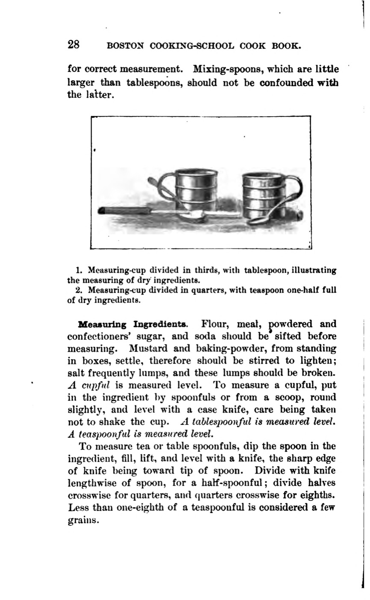

In 1896 Fannie Farmer’s publisher, Little, Brown, had so little faith in her cookbook that it made her pay for printing the first 3,000 copies. During her lifetime it sold 360,000.
Before the recipes, on page 27, she stopped to explain what “a cupful” meant.
She wrote that rule once, at the front, and every recipe depended on it. A rules file for an agent works the same way, as long as each rule means the same thing to every reader who opens it.
One rule, at the front
Her reason was blunt: “Good judgment, with experience, has taught some to measure by sight; but the majority need definite guides.” The guides themselves are short:
- Use measuring cups “holding one half-pint, and tea and table spoons of regulation sizes.”
- “A cupful is measured level.” So is a tablespoonful. So is a teaspoonful.
- But liquids are different: “A cupful of liquid is all the cup will hold.”
- For butter and lard, “pack solidly into cup or spoon, and level with a knife.”
She even saw the wrong spoon coming. “Mixing-spoons, which are little larger than tablespoons, should not be confounded with the latter.” The rule covers flour, liquids and butter separately, and names the spoon most likely to be picked up by mistake.

She did not repeat any of this in the recipes. The cake chapter simply begins: “Before attempting to mix cake, study How to Measure (p. 27)”. One rule, and every recipe pointing back to it.
It had to be definite because of who was reading. A cook alone in a kitchen, with only the book, needed “a cupful” to mean one thing, and Farmer could not be there to say which.
The same word, a different spoon
The gap she closed for cooks is still open for medicine. In 2024, more than 361,000 people called a US poison center about a medication error, according to the National Capital Poison Center, which runs the Poison Control service. One of its warnings on measuring reads: “DO NOT use household spoons; they are not the standard sizes for medicines.”
“Teaspoon” on a label and a teaspoon in a kitchen drawer share a word. They do not share a size.
The agent reads alone
When you direct an agent, you write rules for it: how dates should look, what counts as finished, which files it must never touch. Put them in one file that every session reads, and you write each rule once, as Farmer did.
Each session then reads that file the way her readers read the book, alone and with nobody to ask. It acts on the words you wrote, not on what you had in mind. Compare vague and definite versions of the same two rules:
| Rule in the file | What each session decides for itself |
|---|---|
| “Keep the design consistent.” | Colours, fonts, corners, capitals. All of it, differently each time. |
| “Buttons: blue #1E5AA8, 8px corners, sentence case.” | Nothing about buttons. |
| “Show dates in a friendly format.” | “14/11/2026”, “Nov 14” or “2 days ago”, depending on the session. |
| “Dates: 14 Nov 2026. Times: 24-hour, Stockholm time.” | Nothing about dates. |
You can test a rule the way a recipe gets tested, by watching someone follow it. Ask the agent to restate it against a real case:
You: In your own words, what does the button rule require? How would you style a “Delete account” button?
Agent: Blue #1E5AA8, 8px corners, the label “Delete account” in sentence case.
If you meant destructive buttons to be red, the agent has just shown you that the rule does not say so. Fix it in the file, once, and every session after that reads the corrected version. Because the rule lives in one place, the correction does too.
A cook can level a cup and still burn the cake, and a clear rule does not make an agent’s work correct. It removes the misreading. Which rule in your agent’s file would two sessions read differently today?